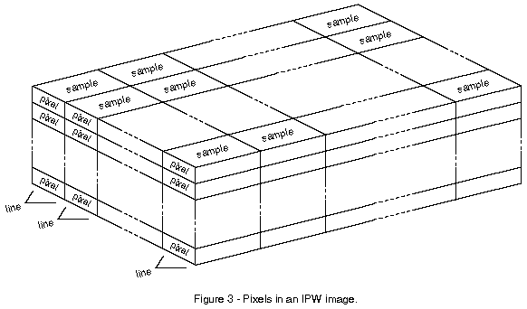
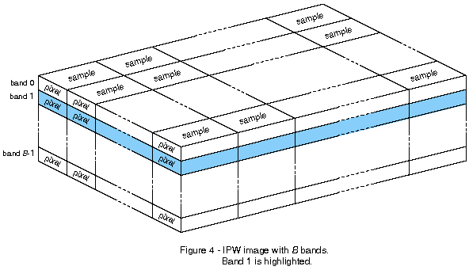

Each sample in an IPW image has a sequence of one or more numeric values associated with it. Each value is called a pixel. If the sequence of the pixels associated with each sample is visualized as a vertical stack, then a whole IPW image may be visualized as a 3-dimensional structure (figure 3).

In this 3-dimensional structure, all the pixels in the same position in their respective stacks constitute a single layer in the image that's called a band (figure 4). The number of pixels per sample in an IPW image is referred to as the number of bands in the image. Like the image's lines and samples, band are numbered starting at 0. Therefore, the first band is referred to as band 0.
